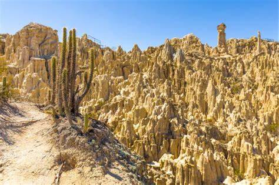
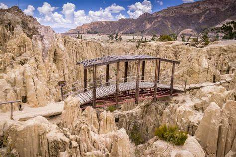
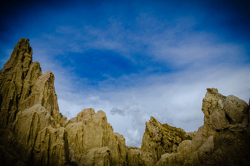
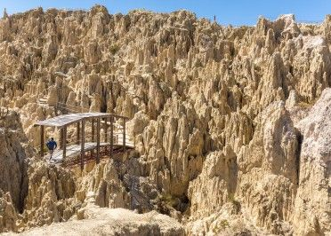

|  Entrada: 45 Bs |
 Horario: 8AM - 5PM |
 Medios de pago: Efectivo/tarjeta |
 Transporte: Existen diversos vehiculos que te llevar desde cualquier parada de teleferico. |
Transporte:
Desde La Paz: Se encuentra a unos 10 km al sur del centro de La Paz. Puedes tomar un taxi o un tour organizado para llegar al Valle de la Luna.
Recomendaciones:
Lleva agua, protector solar y calzado cómodo para explorar el área. Verifica la situación actual de horarios y tarifas antes de tu visita, ya que pueden cambiar.